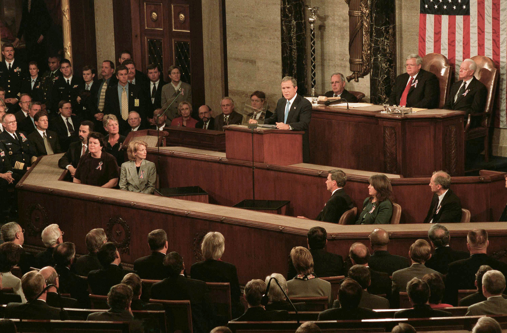

Figure 13.1
In the late 19th century, Andrew Carnegie had a brilliant idea. Instead of buying materials and manufacturing steel, Carnegie bought up mines, railways, and all other aspects of the industry, pioneering a business model that later became known as vertical integration, in which a company owns both its suppliers and buyers. Gathering, manufacturing, and delivering raw materials and finished goods all under the control of a single corporation allowed Carnegie’s profits to soar by cutting out the middleman and allowing him to drive the competition out of certain markets. A century later, this same strategy still works; it may not drive industrialization, but its effects are just as powerful.
In late 2009, cable company Comcast announced a plan to purchase a controlling ownership stake in NBC Universal to allow Comcast to join with NBC.Tim Arango, “G.E. Makes It Official: NBC Will Go to Comcast,” New York Times, December 4, 2009, http://www.nytimes.com/2009/12/04/business/media/04nbc.html. This multibillion-dollar deal would give Comcast a 51 percent stake in the company, with present owners General Electric (GE) retaining control of the other 49 percent. The proposed venture brought together all NBC Universal content—including Universal Pictures and Focus Features; Spanish-language network Telemundo and the cable networks USA, Bravo, CNBC, and MSNBC—with Comcast’s cable channels, which include E! Entertainment, the Golf Channel, and the sports network Versus. Already one of the nation’s largest cable and broadband Internet providers, Comcast would then conceivably have the power to restrict these hugely popular NBC-owned networks to its own cable service, thus forcing consumers to adopt Comcast in order to watch them, or to charge huge premiums to competitors’ cable subscribers for the channels, thereby making their own cable service more desirable.
The most concerning—or beneficial, for Comcast—aspect of this merger is how it may integrate online content with traditional cable media. NBC Universal cofounded Hulu, the second-largest online video channel in the United States. If Comcast sees ad-driven sites such as Hulu as a threat to its cable business, then ownership over the online video portal would allow Comcast to restrict the site and all of NBC’s online content to its own cable subscribers. In effect, Comcast would be allowed to create a subscription model for Internet content, just as it sells subscriptions for cable content. For years, viewers have been able to pick and choose from a wide variety of sources, selecting only the online content that they want; now, some fear that Comcast could bring the problems of a cable subscription—hundred of channels but only some worth watching—to the Internet.Alex Chasick, “Why a Comcast/NBC Merger Is Bad News,” Consumerist (blog), December 3, 2009, http://consumerist.com/2009/12/why-a-comcastnbc-merger-is-bad-news.html.
This merger has the potential to reshape the way that mass media is produced and distributed to consumers. When most Internet users subscribed to America Online (AOL), the company set up its own site simply as a portal to other companies’ content. The proposed integration of content producers and service providers, however, allows for unprecedented control of Internet content. Net neutrality poses another problem; Comcast could potentially grant its own content channels— such as a subscription-only version of Hulu— privileges over competing channels. While this does not necessarily pose a problem when there is healthy competition, in many regions Comcast is the only provider of broadband Internet, thus raising concerns of a potential monopoly. No matter what happens with this particular merger, it seems that the economics of mass media are becoming even more tangled as the rapid rise of new technology threatens to transform or replace traditional media outlets.
The merger of Comcast and NBC is just one example of the myriad ways media companies do business. Television, print publishing, radio broadcasting, music, and film all have their own economic nuances and distinct models. However, these business models fall into three general categories: monopoly, oligopoly, and monopolistic competition.
Of these three basic media business models, monopoly is probably the most familiar. A monopolyThe control of a product or service by one company. occurs when one controls a product or service—for example, a small town with only one major newspaper. OligopolyThe control of a product or service by a few companies., or the control of a product or service by just a few companies, commonly occurs in publishing; a few major publishers put out most best-selling books, and relatively few companies control many of the nation’s highest-circulating magazines. Television is much the same way, as the major broadcast networks—Comcast and GE’s NBC, Disney’s ABC, National Amusements’s CBS, and News Corporation’s Fox—own nearly all broadcast and cable outlets. Finally, monopolistic competitionThe control of a product or service by numerous companies offering relatively limited products and services. takes place when multiple companies offer essentially the same product or service. For example, Ticketmaster and Live Nation were longtime competitors until they merged in 2010, with both providing basically the same set of event-management services for music and other live entertainment industries.
The last few decades have seen increasing conglomeration of media ownership, allowing for economies of scale that previously could not be achieved. Instead of individual local radio stations competing for advertising revenue among a range of local companies, for example, large corporations can now buy wholesale advertising for any or all of their brands on a dozen different radio stations in a single media market all owned by a conglomerate such as Clear Channel. The economics of mass media has become a matter of macroeconomic proportions: GE now makes everything from jet engines to cable news. The implications of this go beyond advertising. Because major corporations now own nearly every media outlet, ongoing fears of corporate control of media messaging have intensified.
However, these fears are often channeled into productive enterprises. In many media industries, an ongoing countercurrent exists to provide diversity not found in many corporate-owned models. Independent radio stations such as those affiliated with nonprofit organizations and colleges provide news and in-depth analysis as well as a variety of musical and entertainment programs that are not found on corporate stations. Likewise, small music labels have had recent success promoting and distributing music through online CD sales or digital distribution services such as iTunes appliance program. YouTube makes it easier for videographers to reach a surprisingly large market, often surpassing even professional sites such as Hulu.
Companies employ many different ways to raise revenue for their services, but all boil down to two fundamental ideas: The money comes either from consumers or from advertising. In practice, many outlets combine the two to give themselves a flexible stream of income. Equally, consumers may be willing to pay slightly more for fewer ads, or to sit through more advertising in exchange for free content.
Traditional book publishers, which make practically all of their money by selling their products directly to consumers, lie on one extreme end of the spectrum. In some respects, cable companies use a related model under which they directly sell consumers the delivery and subscription of a bundled package of programming channels. However, cable channels primarily rely on a mix of media revenue models, receiving funding from advertising along with subscription fees. Magazines and newspapers may fall into this middle-ground category as well, although online classified advertising has caused print publications to lose this important revenue stream in recent years. Broadcast television is the clearest example of advertising-driven income, as there are no subscription fees for these channels. Because this lack of direct fees increases the potential audience for the network, networks can sell their advertising time at a premium, as opposed to a cable channel with a more limited and likely more narrow viewership.
Print media fall into three basic categories: books, newspapers, and magazines. The book publishing industry is basically an oligopoly; the top 10 trade publishers made up 72 percent of the total market in 2009, with the top five alone comprising 58 percent of this.Michael Hyatt, “Top Ten U.S. Book Publishers for 2009,” January 15, 2010, http://michaelhyatt.com/2010/01/top-ten-u-s-book-publishers-for-2009.html. Newspapers tend toward local monopolies and oligopolies, as there are generally few local news sources. In the past classified advertising made up a substantial portion of newspaper revenue. However, the advent of the Internet—particularly free classified services such as Craigslist—has weakened the newspaper industry through dwindling classified advertising revenues.
The newspaper industry also entails a mix of initial, or first copy costsThe added cost of the first unique good produced, such as the initial copy of a print newspaper., and relatively low marginal costsThe costs per unit of a good, such as a print newspaper.. Journalistic and editorial costs are relatively high, whereas the costs of newsprint and distribution are fairly low. The transition from the labor-intensive process of mechanical typesetting to modern electronic printing greatly reduced the marginal costs of producing newspapers. However, the price of newsprint still goes through cyclical ups and downs, making it difficult to price a newspaper in the long run.
The highest costs of publishing a paper remain the editorial and administrative overheads. Back-office activities such as administration and finance can often be combined if a company owns more than one paper. Unlike the historical restrictions on broadcast media that limited the number of stations owned by a single network, print media has faced no such ownership limits. Because of this, a company such as Gannett has come to own USA Today as well as mostly local newspapers in 33 states, Guam, and the United Kingdom.Columbia Journalism Review, “Who Owns What,” August 13, 2008, http://www.cjr.org/resources/index.php. Other companies, such as McClatchy, also run their own wire services, partly as a way of reducing the costs of providing national journalism to many local markets.
Like newspapers, magazines are largely owned by just a few companies. However, unlike newspapers, many magazine chains are themselves owned by much larger media conglomerates. Time Warner—the highest-ranking media company in 2003—owns numerous magazines, including Time, Fortune, and Sports Illustrated. Taking all of its publications into account, Time Warner controls a 20 percent share of all magazine advertising in the United States. However, many smaller publishers produce niche publications, many of which do not aspire to a wider market. In all, magazines seem to be undergoing a period of economic decline, with a net loss of some 120 publications in 2009 alone.Matthew Flamm, “367 Magazines Shuttered in 2009,” Crain’s New York Business, December 11, 2009, http://www.crainsnewyork.com/article/20091211/FREE/912119988.
As discussed in Chapter 9 "Television", large media conglomerates own nearly all television networks. Both national networks and local affiliates are typically owned by conglomerates; however, stations such as Fox-owned WNYW in New York or CBS-owned KCNC in Denver are able to mix local content with national reporting and programming, much as large newspaper companies do.
In a local market, one cable company usually dominates the cable service market. In many places, one cable company, such as Comcast—the largest of the cable companies—is the only option. Over the past several years, however, satellite companies such as Dish Network and DirecTV, which are able to reach any number of consumers with limited local infrastructure, have introduced increased, albeit limited, levels of competition.
Even as cable is expanding, radio has become heavily consolidated. Since the 1990s, massive radio networks such as Clear Channel Communications have bought up many local stations in an effort to control every radio station in a given media market. However, the FCC has designated the lower part of the FM radio band for noncommercial purposes, including nonprofit programming such as educational, religious, or public radio stations—and continues to hold public discussion on frequency allocations. These practices help retain a certain level of programming diversity in the face of increased homogenization, largely because such stations are not supported through advertising. Because they are funded by donations or nonprofit institutions, these stations benefit economically from catering to a minority of listeners who may support the station directly, rather than a larger majority that has other options for entertainment.
Because both the music and film industries face unique business opportunities and challenges, each operates on an economic model unlike either print or broadcast media. Just like those forms of media, however, music and film have undergone significant changes due to consolidation and technological and consumer shifts in recent years.
The music industry is closely related to the radio industry, and the two have a high degree of codependence. Without music, radio would not be quite as lively or nearly as popular; without radio, music would be more difficult for listeners to discover, and perhaps be limited to a local consumer base.
As radio companies have consolidated, so has the music industry. A total of four record companies, popularly called the “Big Four” within the industry, dominate the recorded music business and thus most mainstream radio airwaves. Because a conglomerate such as Clear Channel is ill-equipped to handle local tastes and musical acts—and because it tends to be easier to manage programming across a large regional area than on a station-by-station basis—the Big Four record companies tend to focus on national and international acts. After all, if a label can convince a single radio conglomerate to play a particular act’s music, that performer instantly gains access to a broad national market.
Music is therefore widely considered an oligopoly, despite the presence of countless small, independent companies. A handful of major record labels dominate the market, and they are all basically structured the same way. Universal is owned by NBC, which was in turn owned by GE and now Comcast; Sony Music is owned by the eponymous Japanese technology giant; Warner Music Group, although now its own entity, was previously under the umbrella of Time Warner; and the EMI Group is owned by a private investment firm.
Although the Big Four dominate the recorded music industry, they have surprisingly little to do with live performances. Traditionally, musicians have toured to promote their albums—and sell enough copies to pay off their advances—and the live show was a combination of self-promotion and income. An artist’s record company provided financial support, but a concert ticket generated significantly more income per sale than a CD. Since the merger of ticketing companies Ticketmaster and Live Nation, the ticketing services for large venues have practically been monopolized. For example, Madison Square Garden, one of the largest venues in New York City, does not handle its booking in-house, and with good reason; the technology to manage tens of thousands of fans trying to buy tickets to a soon-to-be-sold-out concert the day they go on sale would likely break the system. Instead, Ticketmaster handles all of the ticketing for Madison Square Garden, adding a 10 percent to 20 percent fee to the face value of the ticket for its exclusive service, depending on the venue and price of the show.
Because of the nature of film, the economics of the medium are slightly different from those of music. The absence of film in broadcasting, the lack of a live performance, and the exponentially higher budgets are just some of its unique facets. As with music, however, large companies tend to dominate the market. These massive studios are now connected corporately with other media outlets. For example, Sony and Universal both have partners in the music industry, while Fox and Disney control major television broadcast and cable networks as well as film studios.
Just as record labels do with radio conglomerates, film distribution companies tend to sell to large chains, such as the over 6,000-screens-strong Regal Entertainment Group and the over 4,000-screens-strong AMC Entertainment, which have national reach.National Association of Theater Owners, “Top Ten Circuits,” July 1, 2009, http://www.natoonline.org/statisticscircuits.htm. However, independent filmmakers still provide limited competition to these larger studios.
Figure 13.2
The founders of Miramax, brothers Bob and Harvey Weinstein, had a messy breakup with major studio Disney.
Brothers Bob and Harvey Weinstein founded Miramax in 1979 with the intention of independence. Over the ensuing years, they released films that were off-limits to major distributors, such as Quentin Tarantino’s violent Reservoir Dogs and Steven Soderbergh’s controversial Sex, Lies, and Videotape. After Disney bought the smaller studio in 1993, Miramax gained access to even larger financial backing, albeit somewhat begrudgingly. Miramax had cultivated relationships with the now-blockbuster directors Tarantino and Kevin Smith—the director of Clerks, Dogma, and Jay and Silent Bob Strike Back—and when Tarantino’s Pulp Fiction made more than $100 million at the box office within 2 years of Disney’s purchase of Miramax, it seemed like a good deal. As a result, Disney signed the Weinsteins to a new contract, giving them an annual budget of $700 million, and in 2003 Disney gave the Weinsteins permission to raise additional hundreds of millions of dollars from Goldman Sachs in order to make even more expensive movies.“Significant Events in Disney’s Ownership of Miramax,” New York Times, March 5, 2005, http://www.nytimes.com/imagepages/2005/03/06/movies/20050306_MIRAMAX.html.
By 2004, however, relations between Miramax and Disney were turning sour. In May of that year, Disney would not allow Miramax to release Michael Moore’s incendiary documentary Fahrenheit 9/11. In response, the Weinsteins sought outside funding and released it themselves to great success; the film became the highest-grossing documentary of all time, with revenue of $222 million on a mere $6 million budget.Box Office Mojo, “Fahrenheit 9/11,” http://boxofficemojo.com/movies/?id=fahrenheit911.htm. A year later, the Weinsteins dissolved their relationship with Disney. Disney, however, kept the Miramax brand and the entire Miramax library of films.
Yet this fissure did not end the Weinsteins’ careers. In 2005, the brothers founded a new independent film company, the Weinstein Co., which has had some success with films including Vicky Cristina Barcelona and The Queen, as well as the Michael Moore documentaries Sicko and Capitalism: A Love Story. However, when even independent film legends such as the Weinsteins have only limited success, it’s clear that success is hard to come by. The A.V. Club—a companion to the satirical newspaper the The Onion—asked in January 2010, just after Disney closed Miramax for good, “How much longer will the studio ‘indie’ model be viable at all?”Scott Tobias, “R.I.P. (Companies Are People, Too, Division): Miramax 1979–2010,” A.V. Club, January 28, 2010, http://www.avclub.com/articles/rip-companies-are-people-too-division-miramax-1979,37639/. Today, there are few true “indie” studios left, and several major studios have closed their boutique studios, such as Warner Independent and Paramount Vantage. But even if some are questioning the economics of the indie-studio models of the 1980s and 1990s, it seems that there will always be an artistic drive for independent film—and, eventually, someone’s bound to make the economics of it work again.
In many ways, the Internet has been a game-changer throughout the media industry. However, a few things have stayed the same; major media companies own popular media content sites such as Hulu and YouTube and control access to a great deal of online information. Even bloggers, who have found a new role as drivers of the media cycle, are at a disadvantage when it comes to the ability to generate original content. They tend to drive much of their traffic by reposting and adding commentary to news stories from established media outlets. One large and relatively influential outlet, the Drudge Report, is mainly composed of links to outside news organizations rather than original journalism. It gained fame during the late 1990s for breaking the Bill Clinton and Monica Lewinsky scandal—albeit by posting about how Newsweek killed reporter Michael Isikoff’s story on the matter.BBC News, “Scandalous Scoop Breaks Online,” January 25, 1998, http://news.bbc.co.uk/2/hi/special_report/1998/clinton_scandal/50031.stm. Still, the economic complications of the Internet have changed the calculus of media permanently, a status made clear by the drastic increase in free content over the past decade.
Choose a media outlet such as the Washington Post or CNN and visit its website to determine its parent company. Often this will be in the “Corporate” or “About Us” sections. Then visit the Columbia Journalism Review’s resource “Who Owns What?” at http://www.cjr.org/resources/index.php. Consider and respond to the following questions:
The challenge to media economics is one of production. When print media was the only widely available media, the concept was simple: Sell newspapers, magazines, and books. Sales of these goods could be gauged like any other product, although in media’s case, the good was intangible—information—rather than the physical paper and ink. The transition from physical media to broadcast media presented a new challenge, because consumers did not pay money for radio and, later, television programming; instead, the price was an interruption every so often by a “word from our sponsors.” However, even this practice hearkened back to the world of print media; just as newspapers and magazines sell advertising space, radio and television networks sell space on their airwaves.
The fundamental shift in Internet economics has been the miniscule price of online space compared to that in print or broadcast media. Combined with the instantaneous proliferation of information, the Internet seems to pose a grave threat to traditional media. Media outlets have responded by establishing themselves online, and it is now practically unheard of for any media company to lack an Internet presence. Companies’ archives have opened up, and aside from a few holdouts such as the Wall Street Journal, nearly every newspaper allows free online access, although some papers, like The New York Times, are going to experiment with a paid subscription model to solve the problem of dwindling revenues. Newspapers now offer video content online, and radio and television networks have published traditional text-and-photo stories. Through Internet portals, media companies have synergized their content; they are no longer merely television networks or local newspapers but instead are quickly moving to become a little bit of everything.
Although the Internet has had many effects on media economics, ranging from media piracy to the lowered costs of distribution, arguably the greatest effect has been the synergyThe combination of media outlets across platforms. of different forms of media. For example, the front page of The New York Times website contains multiple short video clips, and the front page of Fox News’ website contains clips from the cable television network along with relevant articles written by FoxNews.com staff. Media outlets offer many of these services for free to consumers, if for no other reason than because consumers have become accustomed to getting this content for free elsewhere on the Internet.
The Internet has also drastically changed the way that companies’ advertising models operate. During the early years of the Internet, many web ads were geared toward sites such as Amazon and eBay, where consumers purchased products or services. Today, however, many ads—particularly on sites for high-profile media outlets such as Fox News and The New York Times—are for products that are not typically bought online, such as cars or major credit cards. However, another category of advertising that is tailored toward individual web pages has also gained prominence on the Internet. In this form of advertising, marketers match advertisers with particular keywords on particular web pages. For example, if the page is a how-to guide for fixing a refrigerator, some of the targeted ads might be for local refrigerator repair shops.
Figure 13.3
Google makes almost all of its money through advertising, allowing it to provide many services such as email and document sharing for free.
Search-engine company Google has been working to perfect this type of targeted advertising search. Low-cost text ads may appear next to its search results, on various web pages, and in the sidebar of its free web-based email service, Gmail. More than just using algorithms to sort through massive amounts of data and matching advertising to content, Google has lowered the cost barrier to advertising, as well as the volume barrier to hosting advertising. Because Google automatically matches sites with advertisers, an independent site can sign up for its advertising service and get paid for each person who follows the text links. Likewise, relatively small companies can buy advertising space in specialized niches without having to go through a large-volume ad buyer. This business has proven extremely productive; the bulk of Google’s revenue comes from advertising even as it gives away services such as email and document sharing.
Search engines like Google and video-sharing sites like YouTube (which is owned by Google) allow access to online information, but they do not actually produce that information themselves. Thus, the propensity of these sites to gather information and then make it available to consumers free of charge does not necessarily sit well with those who financially depend on the sale of this information.
One of Google’s more controversial projects is Google News, a news aggregator that automatically collects news stories from various sources on the Internet. This service allows users to view the latest news from many different sources conveniently in one location. However, the project has been met with opposition from a number of those news sources, who contend that Google has infringed on their copyrights and cost them revenue. The Wall Street Journal has been one of the more vocal critics of Google News. In April 2009, editor Robert Thomson said that news aggregators are “best described as parasites.”Jane Schulze, “Google Dubbed Internet Parasite by WSJ Editor,” Australian (Sydney), April 6, 2009, http://www.theaustralian.com.au/business/media/google-dubbed-internet-parasite/story-e6frg996-1225696931547. In December 2009, Google responded to these complaints by allowing publishers to set a limit on the number of articles per day a reader can view for free through Google.
The recent confrontation between Google and the traditional news media is only one of many problems resulting from digital technology. Digital technology can create exact copies of data so that one copy cannot be distinguished from the other. In other words, although a printed book might be nicer than a photocopy of that book, a digitization of the book is exactly the same as all other digitized copies and can be transmitted almost instantly. Similarly, although cassette tape copies of recorded music offered lower sound fidelity than the originals, the emergence of writable CD technology during the 1990s allowed for the creation of a copy of a digital audio CD that was identical to the original.
As data storage and transmission costs dropped, CDs no longer had to be physically copied to other CDs. With the advent of MP3 digital encoding, the music information on a CD could be compressed into a relatively small, portable format that could be transmitted easily over the Internet, and music file sharing took off. Although these recordings were not exactly the same as their CD-quality counterparts, most listeners could not tell the difference—or they just didn’t care, because they were now able to share music files conveniently and for free. The practice of transmitting music over the Internet through services such as Napster quickly ballooned.
As high-bandwidth Internet connections proliferated, video-sharing and streaming sites such as YouTube started up. Although these sites were supposedly intended for users to upload and share their own amateur videos, one of the big draws of the site was the high quantity of television show episodes, music videos, and other commercial content that has been posted illegally. The replication potential inherent in digital technology combined with online transmission has caused a sea change in media industries that rely on income directly from consumers, such as books and recorded music. However, as the next section will show, the shift of media and information to the Internet can pose the risk of a digital divide, where those without Internet access are at an even greater disadvantage than they were before.
Producers of content are not without protection under the law. In 1998, Congress enacted the Digital Millennium Copyright ActThe piece of 1998 legislation that made digital piracy illegal while exempting Internet service providers from liability. (DMCA) in an effort to stop the illegal copying and distribution of copyrighted material. The legislation defined many digital gray areas that previously may not have been explicitly covered, such as circumventing antipiracy measures in commercial software; requiring webcasters to pay licensing fees to record companies; and exempting libraries, archives, and some other nonprofit institutions from some of these rules under certain circumstances. Since 1998, this legislation has been the bedrock of a variety of claims against sites such as YouTube. Under the law, copyright holders may send letters to Internet hosts distributing their copyrighted material. Certifying that they have a good-faith belief that the host does not have prior permission to distribute the content, copyright holders may request a removal of that material from the site.U.S. Copyright Office, “Copyright Law: Chapter 5,” 1998, http://www.copyright.gov/title17/92chap5.html.
Although much of the law has to do with the rights of copyright holders to request the removal of their works from unlicensed sites, much of the DMCA also enacts protections for Internet service providers (ISPs). Although before there had been some question as to whether ISPs could be charged with copyright infringement merely for allowing reproductions to use their bandwidth, the DMCA made it clear that ISPs are not expected to police their own bandwidth for illegal use and are therefore not liable. Although the DMCA is not necessarily to everyone’s liking—requiring individual takedown notices is time-consuming for corporations, and the relative lack of safeguards can allow large companies to bully ISPs into shutting down smaller sites, given a good-faith notice—the protections and clarifications that it has created have cleared up some of the confusion surrounding digital media.Ashlee Vance, “Court Confirms DMCA ‘Good Faith’ Web Site Shut Down Rights,” Register, May 30, 2003, http://www.theregister.co.uk/2003/05/30/court_confirms_dmca_good_faith/. However, as the price of bandwidth drastically drops and as more media goes digital, copyright laws will inevitably need to be amended again.
Navigate to a traditional media outlet’s online portal, such as NYTtimes.com or FoxNews.com. Print out a hard copy of the home page and write on it, or save it to your computer and open it in a document editor such as Microsoft Word to annotate it. Note items such as these:
More than just a tool for information transfer, the Internet has become a conduit for a globalized workforce. A corporation in New York can outsource electronically based work to a highly connected developing country like India without incurring the sort of shipping charges or communication delays that previously impeded such efforts. Internet access, particularly for business, has made development possible in remote areas, allowing corporations access to less expensive labor and allowing money to flow into developing countries. However, as the Internet has become integrated into daily business life, a digital divideThe difference between those who derive the benefits of Internet access and those who do not. has emerged: Some derive the benefits from Internet access, but many others do not.
Many U.S. and international leaders and nongovernmental organizations have identified the digital divide as an area of concern. A globalized workforce does not separate the world into easily divisible political territories but rather into those that have useful access to technology to reach a wider market and those that do not. As the 21st century develops, worldwide communication has become increasingly imperative for a healthy economy, creating a new challenge to make sure that rapid technological changes do not preclude economic success for less developed economies.
However, the problem extends beyond simple access or even competency. The 80/20 effectThe effect wherein 80 percent of economic profit is made from the most affluent 20 percent of the population., under which 80 percent of profit is created for the most affluent 20 percent, exacerbates the digital divide. In other words, the Internet—created in large part by and for the rich—is practically useless for the poor, particularly in developing countries. Thus, bridging the digital divide is about helping those with little or no access to the digital world gain the ability to use technology in economically advantageous ways.
As information and media move online, those without ready access to the Internet are increasingly being left behind. Even in developed countries such as the United States, the digital divide is readily apparent. Often, older and less educated workers do not have computer skills or home Internet access. In June 2009, the Pew Research Center studied the demographic differences in broadband Internet adoption and found that 45 percent of those without Internet access were age 65 and over.John Horrigan, “Home Broadband Adoption 2009,” Pew Internet & American Life Project, June 17, 2009, http://www.pewinternet.org/Reports/2009/10-Home-Broadband-Adoption-2009.aspx. Even more significantly, a quarter of the unconnected were between the ages of 50 and 64. These workers are at a distinct disadvantage when it comes to finding and being hired for jobs.
As classified advertisements and job postings have left newspapers for the web, Internet access has become vital to even finding a job to apply for. In the previously mentioned Pew survey, 20 percent of respondents had incomes of less than $20,000 per year. However, these 20 percent made up a disproportionately high 48 percent of the survey’s non-Internet users; a full 64 percent of low-income survey participants did not have access to the Internet. These numbers drastically dropped as wages increased—while those making under $40,000 per year made up 80 percent of non-Internet users, those making over $50,000 made up 50 percent of high-speed Internet users. As the Internet is becoming an integral part of our daily lives, a lack of access among certain groups could severely hamper upward economic mobility.
Access to the Internet is an essential aspect of many successful job hunts, but it is also important to consider computer skills themselves. Many older adults who grew up without the Internet lack the computer and technology skills that contemporary jobs require. MSNBC reported in October 2009 that unemployment rates for older workers were at a 60-year high, having doubled in the period between late 2007 and the fall of 2009.Alex Johnson, “Lack of Computer Skills Foils Many Job-Seekers,” MSNBC, October 2, 2009, http://www.msnbc.msn.com/id/33106445. While the overall unemployment rate at that time had reached a 26-year high, older workers who lacked the skills of younger, computer-savvy adults were suffering disproportionately. Lack of computer skills can be a crippling impediment to job success, even if a person can find a job in difficult economic times.
In response to these challenges, libraries and other nonprofit groups have taken on the task of training older unemployed workers to effectively use the Internet for job-related needs. These training courses, beginning with turning on a computer and using the mouse and ranging into advanced office program use, seek to provide skills necessary to allow older workers to reenter the work force. These organizations also aim to show users that they can increase their quality of life by setting up email for communication with friends and family members.
While the digital divide in the United States is largely a matter of education, cost barrier, and lack of adoption of new technology, the digital divide in economically underdeveloped countries adds the complication of infrastructure. Internet service requires the existence of widespread stable networks to handle large computer centers, and electronic access to the outside world needs a constant data connection. Therefore, in many developing countries, practically no residents have access to computers and the Internet; this cuts them off not only from information but from the entire global economy.
Table 13.1 Internet Connectivity by Country
Country |
Population (millions) |
Internet users (millions) |
Percent connected |
|---|---|---|---|
China |
1,330 |
298 |
22 |
India |
1,173 |
81 |
7 |
United States |
310 |
231 |
75 |
Indonesia |
243 |
30 |
12 |
Brazil |
201 |
65 |
32 |
Japan |
127 |
91 |
72 |
Afghanistan |
29 |
0.5 |
2 |
Mongolia |
3.1 |
0.3 |
10 |
Source: CIA World Factbook, https://www.cia.gov/library/publications/the-world-factbook/ (accessed July 27, 2011).
The Digital Divide Institute has launched a campaign to integrate Indonesia into the global digital network as a representative solution to this problem. Indonesia is the world’s fourth-largest country in terms of population and already has wide cell-phone coverage—a significant advantage when it comes to rural information access.Digital Divide Institute, “Indonesia,” 2010, http://www.digitaldivide.org/indonesia.html. The organization claims that by expanding these wireless communication networks to encompass 3G and high-speed Internet access, access to the Internet could rise so much that Indonesia could become a fully emerging market for global services. To put this in perspective, connecting 20 percent of Indonesians to the Internet brings the total connected population of Indonesia to 48 million users, equivalent to all of South Korea, one of the most connected countries in the world.Central Intelligence Agency, “Country Comparison: Population,” World Factbook, https://www.cia.gov/library/publications/the-world-factbook/rankorder/2119rank.html. The economic and political benefits of widespread Internet connectivity to nations like Indonesia are huge. The Digital Divide Institute points to Ireland as an example of how increasingly high-tech jobs can accompany the decline of terrorism—evidence that bridging the digital divide can be an issue of international security as well as global prosperity.
One contentious issue in bridging the digital divide is which billion to focus on—of the 6.8 billion people in the world, only an estimated 1.6 billion are connected to the Internet.Central Intelligence Agency, “World,” World Factbook, https://www.cia.gov/library/publications/the-world-factbook/geos/xx.html. Therefore, the discussion of bridging the digital divide is quickly complicated by this question: To whom should we build the bridge? While some organizations such as the Digital Divide Institute suggest that the global “pyramid” should focus on the next billion—countries such as Indonesia with wide cell-phone coverage but little access to useful, global digital technology. Other organizations see it differently.
Figure 13.4

The One Laptop per Child project aims to put one of these XO computers in the hands of many children in developing countries.
Many believe that everyone in the world can benefit from technology if it is deployed properly. The organization One Laptop per Child (OLPC) seeks to achieve exactly what its name implies with a low-cost design that runs on free software and requires very little energy.One Laptop per Child Association, “One Laptop per Child (OLPC): Laptop.” http://laptop.org/en/laptop/index.shtml. Central to OLPC’s goal is the idea that learning to use technology needs to be recalibrated toward learning through technology. Another crucial idea is the organization’s conception of networks as essentially localized with the potential to be expanded. OLPC’s XO laptop connects to its neighbors, creating many small networks through a fairly wide wireless range. In addition, its ability to access the Internet through this wide wireless range allows remote educational opportunities for children in developing countries. Although it may seem to leap directly from no communication access to wireless Internet video streaming, this program has shown that it may even be more cost effective than traditional connective technologies like phone lines.
Please respond to the following short-answer writing prompts. Each response should be a minimum of one paragraph.
The modern theory of the information economyAn economic model based on selling intangible information rather than products. was expressed in the 1998 publication of Information Rules: A Strategic Guide to the Network Economy, written by Cal Shapiro, an economics professor at University of California, Berkeley, and Hal Varian, now chief economist at Google. Their fundamental argument was simple: “Technology changes. Economic laws do not.”Carl Shapiro and Hal R. Varian, Information Rules: A Strategic Guide to the Network Economy (Cambridge, MA: Harvard Business School Press, 1998).
While economic laws may not change, the fundamentals of the business of information are far different from the fundamentals of most traditional businesses. For example, the cost of producing a single sandwich is relatively consistent, per sandwich, with the cost of producing multiple sandwiches. As discussed in Section 13.1 "Characteristics of Media Industries", information works differently. With a newspaper, the first copy costs are far higher than the marginal costs of secondary copies. The high first costs and low marginal costs of the information economy contribute very heavily to the potential for large corporations gaining dominance. The confluence of these two costs creates a potential economy of scaleAn economic model with high first costs and low marginal costs that heavily rewards expansion., favoring the larger of the competitors.
In addition, information is what economists refer to as an experience goodA good that requires the customer to experience it in order to judge its value., meaning that consumers must actually experience the good to judge its value. The problem with information is that the experience is the good; how do you know, for example, that a movie has high-quality acting and an interesting plot before you’ve watched it? The solution to this is branding, which was discussed in Chapter 12 "Advertising and Public Relations". Although it may be difficult to judge a movie before watching, knowing that a given film was made by a certain director or stars an actor you like increases its value. Marketers use movie trailers, press coverage, and other marketing tools to communicate this branding message in the hopes of convincing you to watch the films they are promoting.
Another important facet of information technology is the associated switching costsThe cost that a user must pay to switch from one technological format to another.. When economists consider switching costs, they take into account the difference between the cost of one technology and the cost of another. If this difference is less than the cost it would take to switch—for information, the cost of moving all of the relevant data to the new technology—then it is deemed possible to switch. A classic example is moving a music collection from vinyl LPs to CDs. For a consumer to switch systems—that is, to buy a CD player and stereo—that person would also have to rebuild his or her entire music collection with the new format. Luckily for the CD player, the increase in convenience and quality was great enough that most consumers were inclined to switch technologies; however, as is apparent to anyone going to a thrift store or garage sale, old technologies are still being used because the information on the records was important enough for some people to keep them around.
Although Chapter 15 "Media and Government" will discuss government regulation in greater depth, a basic understanding of the interaction between government and media over time is essential to understanding the modern information economy. Public policy and governmental intervention exacerbate an already complicated system of information economics, but for good reason—unlike typical goods and services, the information economy has many significant side effects. The consequences of one hamburger chain outcompeting or buying up all other hamburger chains would surely be fairly drastic for the hamburger-loving world, but not altogether disastrous; there would be only one type of hamburger, but there would still be many other types of fast food remaining. On the contrary, the consequences of monopolization by one media company could be alarming. Because distributed information can influence public policy and public opinion, those in charge of the government have an interest in ensuring fair distribution of that information. The bias toward free markets has been mitigated—even in the United States—when it comes to the information economy.
The Federal Communications Commission (FCC) is largely responsible for this regulation. Established by the Communications Act of 1934, the FCC is charged with “regulating interstate and international communications” for nearly every medium except for print.Federal Communications Commission, “About the Federal Communications Commission,” http://www.fcc.gov/aboutus.html. The FCC also attempts to maintain a nonpartisan, or at least bipartisan, outlook, with a maximum of three of its five commissioners belonging to the same political party. Although the FCC controls many important things—making sure that electronic devices don’t emit radio waves that interfere with other important tools, for example—some of its most important and most contentious responsibilities relate to the media.
As the guardian of the public interest, the FCC has called for more competition among media companies; for example, the ongoing litigation of the merger between Comcast and NBC is not concerned with whether consumers will like streaming Hulu over the Internet, but rather whether one company should own both the content and the mode of distribution. The public good is not served if consumers’ ability to choose is taken away when a service provider like Comcast restricts access to only the content that the provider owns, especially if that service provider is the consumers’ only choice. In other words, the idea of public good is concerned not with the end result of competition, but with its process. The FCC protects consumers’ ability to choose from a wide variety of media products, and the competition among media producers hopefully results in better products for consumers. If the end result is that all customers choose Hulu anyway, either because it has the shows they like or because it offers the best video-streaming capability, then the process has worked to create the best possible model; there was a winner, and it was a fair fight.
The main tool that the government employs to keep healthy competition in the information marketplace is antitrust legislation. The seminal Sherman Antitrust Act of 1890 helped establish modern U.S. antitrust legislation. Although originally intended to dissolve the monopolistic enterprises of late-19th-century industrialists such as Andrew Carnegie and John D. Rockefeller, the law’s basic principles have applied to media companies as well. The antitrust office has also grown since the original Sherman Act; although the office of the attorney general originally brought antitrust lawsuits after the act’s passage, this responsbility shifted to its own Antitrust Division in 1933 under President Franklin D. Roosevelt.
The Sherman Antitrust Act of 1890 outlined many propositions and goals that legislators deemed necessary to foster a competitive marketplace. For example, Chapter 1, Section 2, of the act states that “Every person who shall monopolize, or attempt to monopolize, or combine or conspire with any other person or persons, to monopolize any part of the trade or commerce among the several States … shall be deemed guilty of a felony.”Legal Information Institute, “Monopolizing trade a felony; penalty,” Cornell University Law School, January 5, 2009, http://www.law.cornell.edu/uscode/html/uscode15/usc_sec_15_00000002----000-.html. This establishment of monopolization as a felony was remarkable; before, free-market capitalism was the rule regardless of the public good, making the Sherman Antitrust Act an early proponent of the welfare of people at large.
Two additional pieces of legislation, the Clayton Antitrust Act of 1911 and the Celler-Kefauver Act of 1950, refined the Sherman Antitrust Act in order to make the system of antitrust suits work more effectively. For instance, the Clayton Act makes it unlawful for one company to “acquire … the whole or any part of the stock” of another company when the result would encourage the development of a monopoly.Legal Information Institute, “Acquisition by one corporation of stock of another,” Cornell University Law School, January 5, 2009, http://www.law.cornell.edu/uscode/html/uscode15/usc_sec_15_00000018----000-.html. More than just busting trusts, the Clayton Act thus seeks to stop anticompetitive practices before they take hold. The Celler-Kefauver Act made it more difficult for corporations to get around antitrust legislation; while the Clayton Act allowed the government to regulate the purchase of a competitor’s stock, the Celler-Kefauver Act extended this to include the competitor’s assets.
Although the early part of the 20th century seemed to be devoted to breaking up trusts and keeping monopolies in check, the media—particularly in the latter part of the century—was still able to move steadily toward conglomeration (companies joining together to form a larger, more diversified corporations). Widespread deregulation (the removal of legal regulations on an industry) took place during the 1980s, in large part through the efforts of free-market economists who argued that deregulation would foster more competition in the information marketplace. However, possibly due in large part to the media economy’s focus on economies of scale, this was not the case in practice. Companies became increasingly conglomerated, and corporations such as Comcast and Time Warner came to dominate the marketplace. The Telecommunications Act of 1996 helped solidify this trend. Although touted as a way to let “any communications business compete in any market against any other” and to foster competition, this act in practice sped up the conglomeration of media.Federal Communications Commission, “FCC — Telecommunications Act of 1996,” November 15, 2008, http://www.fcc.gov/telecom.html.
The extension of the Telecommunications Act of 1996 of corporate abilities to vertically integrate was a primary driving factor behind this increased conglomeraton. Vertical integration has proven particulary useful for media companies due to their high first costs and low marginal costs. For example, a television company that both produces and distributes content can run the same program on two different channels for nearly the same cost as only broadcasting it on one. Because of the localized nature of broadcast media, two broadcast television channels will likely reach different geographical areas. This results in cost savings for the company, but also somewhat decreases local diversity in media broadcasting.
In fact, the Telecommunications Act made some changes in authority for these local markets. The concept of Section 253 is that no state may prohibit “the ability of any entity to provide any interstate or intrastate telecommunications service.”Federal Communications Commission, “Telecommunications Act of 1996, Section 253 (a),” January 3, 1996, http://www.fcc.gov/Reports/tcom1996.pdf. Thus, since state and local governments cannot prohibit any company from entering into a marketplace, there are checks on the amount of a local market that any one company can reach. In addition, the Telecommunications Act capped the share of U.S. television audience for any one company at 35 percent. However, the passage of additional legislation in 1999 allowing any one company to own two television stations in a single market greatly diluted the effect of this initial ruling. Although CBS, NBC, and ABC may be declining in popularity, they “still offer the only means of reaching a genuinely mass television audience” in the country.Gillian Doyle, Understanding Media Economics (Thousand Oaks, CA: Sage, 2002).
Almost all of the major media players in today’s market practice extensive vertical integration through either administrative managementThe potential for divisions of a single company to share the same higher-level management structure. or content integrationThe ability of a company to use the same content across platforms.. Administrative management refers to the potential for divisions of a single company to share the same higher-level management structure, which presents opportunities for increased operational efficiency. For example, Disney manages theme parks and movie studios. Although these two industries are not very closely connected through content, both are large, multinational ventures. Placing both of these divisions under a single corporation allows them to share certain structural similarities, accounting practices, and any other administrative resources that may be helpful across multiple industries.
Content integration—an important practice for media industries—is the ability of these companies to use the same content across multiple platforms. Disney’s theme parks would lose much of their charm and meaning without Mickey Mouse and Cinderella’s castle; the integration of these two industries—Disney’s theme parks and Disney’s animated characters—proves profitable for both. Behind the scenes, Disney is also able to reap some excellent benefits from their consolidation. For example, Disney could release a movie through its studio, and then immediately book the stars on news programs that air on Disney-owned broadcast television network ABC. Beyond just the ABC broadcast network, Disney also has many cable channels that it can use to directly market its movies and products to the targeted demographics. Unlike a competitor that might be wary of promoting a Disney movie, Disney’s ownership of many different media outlets allows it to single-handedly reach a large audience.
However, this high level of vertical integration raises several ethical concerns. In the above situation, for example, Disney could entice reviewers on its television outlets to give positive reviews to a Disney studio movie. Therefore, this potential for misused trust and erroneous information could be harmful.
In many ways, the conglomeration of media companies takes place behind the scenes, with only a minority of consumers aware of vertically intergrated holdings. Media companies often try to foster a sense of independence from a larger corporation. Of course, there are exceptions to this rule; the NBC sitcom 30 Rock often delves into the troubles of running a satirical sketch-comedy show (a parody of NBC’s Saturday Night Live) under the ownership of GE, NBC’s real-life owner.
Although media companies are steadily turning into larger businesses than ever before, many of them have nevertheless fallen on hard times. The instant, free content of the Internet is largely blamed for this decline. From the shift of classified advertising from newspapers to free online services to the decline in physical music sales in favor of digital downloads, the Internet has transformed traditional media economics.
One of the main issues with an unregulated Internet is that it allows digital files to be replicated and sent anywhere else in the world. Large music companies, which traditionally made almost all of their money from selling physical music formats such as vinyl records or compact discs, find themselves at a disadvantage. Consumers can share and distribute music files to anyone, and Internet service providers are exempted from liability under the DMCA. With providers freed of liability and media consumption a driving factor in the rise of high-speed Internet services, ISPs have no incentive to deter illegal sharing along with legal downloads.
Although music companies have had some success selling music through digital outlets, they have not been pioneers in online music sales. Rather, technology companies such as Apple and Amazon.com, sensing a large market for digital downloads coupled with a sleek delivery system, have led the way. Already accustomed to downloading MP3s, consumers readily adopted the model. However, record companies believed that the lack of digital rights management (DRM) protection offered by MP3s represnted a major downside.
Apple provided a way to strike a compromise between accessibility and rights control. Having already captured much of the personal digital audio player market with the iPodthat uses other Apple products, Apple has also long prided itself on creating highly integrated systems of both software and hardware. Because so many people were already using the iPod, Apple had a huge potential market for a music store even if it offered DRM-locked tracks that would only play on Apple devices. This inflexibility even offered a small benefit for consumers; Apple succeeded in convincing companies to price their digital downloads lower than CDs.
This compromise may have sold a lot of iPods and MP3s, but it did not satisfy the record companies. When consumers started to download one hit single for 99 cents—rather than buying the whole album for $15 on CD—the music industry felt the pain. Still, huge monetary advances in digital music have taken place. Between 2004 and 2008, digital music sales increased from $187 million to $1.8 billion.
The music industry has wasted no amount of firepower to blame piracy for the decline in album sales: “There’s no minimizing the impact of illegal file-sharing. It robs songwriters and recording artists of their livelihoods, and it ultimately undermines the future of music itself,” said Cary Sherman, president of the Recording Industry Association of America.Cary Sherman, “File-Sharing Is Illegal. Period,” USA Today, September 18, 2003. However, economists see the truth of the matter as significantly more ambiguous. Analyzing over 10,000 weeks of data distributed over many albums, a pair of economists at the Harvard Business School and University of North Carolina found that “Downloads have an effect on sales which is statistically indistinguishable from zero.”Felix Oberholzer-Gee and Koleman Strumpf, “The Effect of File Sharing on Record Sales: An Empirical Analysis,” Journal of Political Economy 115, no. 1 (February 2007): 1–42. Either way, two things are clear: Consumers are willing to pay for digital music, and digital downloads are on the market to stay for the foreseeable future.
Visit the Columbia Journalism Review’s “Who Owns What?” web page at http://www.cjr.org/resources/index.php. Choose a company from the drop-down menu. Make a chart of all the company’s different media outlets and complete the following activities:
The media industry is, in many ways, perfect for globalization, or the spread of global trade without regard for traditional political borders. As discussed earlier, the low marginal costs of media mean that reaching a wider market creates much larger profit margins for media companies. Because information is not a physical good, shipping costs are generally inconsequential. Finally, the global reach of media allows it to be relevant in many different countries.
However, some have argued that media is actually a partial cause of globalization, rather than just another globalized industry. Media is largely a cultural productA product that has some influence on or connection to cultural attributes., and the transfer of such a product is likely to have an influence on the recipient’s culture. Increasingly, technology has also been propelling globalization. Technology allows for quick communication, fast and coordinated transport, and efficient mass marketing, all of which have allowed globalization—especially globalized media—to take hold.
Much globalized media content comes from the West, particularly from the United States. Driven by advertising, U.S. culture and media have a strong consumerist bent (meaning that the ever-increasing consumption of goods is encouraged as a economic virtue), thereby possibly causing foreign cultures to increasingly develop consumerist ideals. Therefore, the globalization of media could not only provide content to a foreign country but may also create demand for U.S. products. Some believe that this will “contribute to a one-way transmission of ideas and values that result in the displacement of indigenous cultures.”Josefina M. C. Santos, “Globalisation and Tradition: Paradoxes in Philippine Television and Culture,” Media Development, no. 3 (2001): 43–48.
Globalization as a world economic trend generally refers to the lowering of economic trade borders, but it has much to do with culture as well. Just as transfer of industry and technology often encourages outside influence through the influx of foreign money into the economy, the transfer of culture opens up these same markets. As globalization takes hold and a particular community becomes more like the United States economically, this community may also come to adopt and personalize U.S. cultural values. The outcome of this spread can be homogenizationThe process of making things the same. (the local culture becomes more like the culture of the United States) or heterogenization (aspects of U.S. culture come to exist alongside local culture, causing the culture to become more diverse), or even both, depending on the specific situation.Terhi Rantanen, The Media and Globalization (Thousand Oaks, CA: Sage, 2005).
Making sense of this range of possibilities can be difficult, but it helps to realize that a mix of many different factors is involved. Because of cultural differences, globalization of media follows a model unlike that of the globalization of other products. On the most basic level, much of media is language and culture based and, as such, does not necessarily translate well to foreign countries. Thus, media globalization often occurs on a more structural level, following broader “ways of organizing and creating media.”Mirza Jan. “Globalization of Media: Key Issues and Dimensions,” European Journal of Scientific Research 29, no. 1 (2009): 66–75. In this sense, a media company can have many different culturally specific brands and still maintain an economically globalized corporate structure.
Because globalization has as much to do with the corporate structure of a media company as with the products that a media company produces, vertical integration in multinational media companies becomes a necessary aspect of studying globalized media. Many large media companies practice vertical integration: Newspaper chains take care of their own reporting, printing, and distribution; television companies control their own production and broadcasting; and even small film studios often have parent companies that handle international distribution.
A media company often benefits greatly from vertical integration and globalization. Because of the proliferation of U.S. culture abroad, media outlets are able to use many of the same distribution structures with few changes. Because media rely on the speedy ability to react to current events and trends, a vertically integrated company can do all of this in a globalized rather than a localized marketplace; different branches of the company are readily able to handle different markets. Further, production values for single-country distribution are basically the same as those for multiple countries, so vertical integration allows, for example, a single film studio to make higher-budget movies than it may otherwise be able to produce without a distribution company that has as a global reach.
Worth considering is the reciprocal influence of foreign culture on American culture. Certainly, American culture is increasingly exported around the world thanks to globalization, and many U.S. media outlets count strongly on their ability to sell their product in foreign markets. But what Americans consider their own culture has in fact been tailored to the tastes not only of U.S. citizens but also to those of worldwide audiences. The profit potential of foreign markets is enormous: If a movie does well abroad, for example, it might make up for a weak stateside showing, and may even drive interest in the movie in the United States.
One prime example of this phenomenon of global culture and marketing is James Cameron’s 1997 film Titanic. One of the most expensive movies ever produced up to that point, with an official budget of around $200 million, Titanic was not anticipated to perform particularly well at the U.S. box office. Rather, predictions of foreign box-office receipts allowed the movie to be made. Of the total box-office receipts of Titanic, only about one-third came from the domestic market. Although Titanic became the highest-grossing film up to that point, it grossed just $140 million more domestically than Star Wars did 20 years earlier.Box Office Mojo, “All Time Domestic Box Office Results,” http://boxofficemojo.com/alltime/domestic.htm. The difference was in the foreign market. While Star Wars made about the same amount—$300 million—in both the domestic and foreign markets, Titanic grossed $1.2 billion in foreign box-office receipts. In all, the movie came close to hitting the $2 billion mark, and now sits in the No. 2 position behind Cameron’s 2009 blockbuster, Avatar.
Figure 13.5
The movie Titanic, which became the highest-grossing movie of all time, made twice as much internationally as it did domestically.
One reason that U.S. studios can make these kinds of arrangements is their well-developed ties with the worldwide movie industry. Hollywood studios have agreements with theaters all over the world to show their films. By contrast, the foreign market for French films is not nearly as established, as the industry tends to be partially subsidized by the French government. Theaters showing Hollywood studio films in France funnel portions of their box-office receipts to fund French films. However, Hollywood has lobbied the World Trade Organization—a largely pro-globalization group that pushes for fewer market restrictions—to rule that this French subsidy is an unfair restriction on trade.Roman Terrill, “Globalization in the 1990s,” University of Iowa Center for International Finance and Development, 1999, http://www.uiowa.edu/ifdebook/ebook2/contents/part3-I.shtml#B.
In many ways, globalization presents legitimate concerns about the endangerment of indigenous culture. Yet simple concerns over the transfer of culture are not the only or even the biggest worries caused by the spread of American culture and values.
Think of a U.S. product that is available throughout the world, such as an athletic brand like Nike or a food product like Pepsi or Coca-Cola. Now go online to the different country-specific branches of the company’s website.
Cultural imperialismThe takeover of a local culture by a more powerful foreign one. was around long before the United States became a world power. In its broadest strokes, imperialism describes the ways that one nation asserts its power over another. Just as imperial Britain economically ruled the American colonists, so did Britain strongly influence the culture of the colonies. The culture was still a mix of nationalities—many Dutch and Germans settled as well—but the ruling majority of ex-Britons led British culture to generally take over.
Today, cultural imperialism tends to describe the United States’ role as a cultural superpower throughout the world. American movie studios are generally much more successful than their foreign counterparts not only because of their business models but also because the concept of Hollywood has become one of the modern worldwide movie business’s defining traits. Multinational, nongovernmental corporations can now drive global culture. This is neither entirely good nor entirely bad. On one hand, foreign cultural institutions can adopt successful American business models, and corporations are largely willing to do whatever makes them the most money in a particular market—whether that means giving local people a shot at making movies, or making multicultural films such as 2008’s Slumdog Millionaire. However, cultural imperialism has potential negative effects as well. From a spread of Western ideals of beauty to the possible decline of local cultures around the world, cultural imperialism can have a quick and devastating effect.
To begin discussing the topic of cultural imperialism, it is important to look at the ideas of one of its founding theorists, Antonio Gramsci. Strongly influenced by the theories and writings of Karl Marx, Italian philosopher and critic Gramsci originated the idea of cultural hegemony to describe the power of one group over another. Unlike Marx, who believed that the workers of the world would eventually unite and overthrow capitalism, Gramsci instead argued that culture and the media exert such a powerful influence on society that they can actually influence workers to buy into a system that is not economically advantageous to them. This argument that media can influence culture and politics is typified in the notion of the American Dream. In this rags-to-riches tale, hard work and talent can lead to a successful life no matter where one starts. Of course, there is some truth to this, but it is by far the exception rather than the rule.
Marx’s ideas remained at the heart of Gramsci’s beliefs. According to Gramsci’s notion, the hegemons of capitalismAn important part of Gramsci’s theory, it referrs to the powerful states or state actors who seek and find control often without resorting to military dominance.—those who control the capital—can assert economic power, while the hegemons of culture can assert cultural power. This concept of culture is rooted in Marxist class struggle, in which one group is dominated by another and conflict arises. Gramsci’s concept of cultural hegemony is pertinent in the modern day not because of the likelihood of a local property-owning class oppressing the poor, but because of concern that rising globalization will permit one culture to so completely assert its power that it drives out all competitors.
A key danger of cultural imperialism is the possibility that American tastes will crowd out local cultures around the globe. The McDonaldizationAn economic force that promotes efficiency, calculability, predictability, and control. of the globe applies not just to its namesake, McDonald’s, with its franchises in seemingly every country, but to any industry that applies the technique of McDonald’s on a large scale. Coined by George Ritzer in his book The McDonaldization of Society (1993), the concept is rooted in the process of rationalization. With McDonaldization, four aspects of the business are taken to the extreme: efficiency, calculability, predictability, and control. These four things are four of the main aspects of free markets. Applying the concepts of an optimized financial market to cultural and human items such as food, McDonaldization enforces general standards and consistency throughout a global industry.
Figure 13.6
McDonald’s has opened up many culturally specific versions of its chain, all employing its famous Golden Arches.
Unsurprisingly, McDonald’s is the prime example of this concept. Although the fast-food restaurant is somewhat different in every country—for example, Indian restaurants offer a pork-free, beef-free menu to accommodate regional religious practices—the same fundamental principles apply in a culturally specific way. The branding of the company is the same wherever it is; the “I’m lovin’ it” slogan is inescapable, and the Golden Arches are, according to Eric Schlosser in Fast Food Nation, “more widely recognized than the Christian cross.”Schlosser, Eric, Fast Food Nation: The Dark Side of the All-American Meal (Boston: Houghton Mifflin, 2001), 4. Yet, more importantly, the business model of McDonald’s stays relatively the same from country to country. Although culturally specific variations exist, any McDonald’s in a particular area has basically the same menu as any other. In other words, wherever a consumer is likely to travel within a reasonable range, the menu options and the resulting product remain consistent.
Media works in an uncannily similar way to fast food. Just as the automation of fast food—from freeze-dried french fries to prewrapped salads—attempts to lower a product’s marginal costs, thus increasing profits, media outlets seek to achieve a certain degree of consistency that allows them to broadcast and sell the same product throughout the world with minimal changes. The idea that media actually spreads a culture, however, is controversial. In his book Cultural Imperialism, John Tomlinson argues that exported American culture is not necessarily imperialist because it does not push a cultural agenda; it seeks to make money from whatever cultural elements it can throughout the world. According to Tomlinson, “no one really disputes the dominant presence of Western multinational, and particularly American, media in the world: what is doubted is the cultural implications of this presence.”John Tomlinson, Cultural Imperialism: A Critical Introduction (London: Continuum, 2001).
There are, of course, by-products of American cultural exports throughout the world. American cultural mores, such as the Western standard of beauty, have increasingly made it into global media. As early as 1987, Nicholas Kristof wrote in The New York Times about a young Chinese woman who was planning to have an operation to make her eyes look rounder, more like the eyes of Caucasian women. Western styles—“newfangled delights like nylon stockings, pierced ears and eye shadow”—also began to replace the austere blue tunics of Mao-era China. The pervasiveness of cultural influence is difficult to track, however, as the young Chinese woman says that she wanted to have the surgery not because of Western looks but because “she thinks they are pretty.”Nicholas D. Kristof, “In China, Beauty Is a Big Western Nose,” New York Times, April 29, 1987, http://www.nytimes.com/1987/04/29/garden/in-china-beauty-is-a-big-western-nose.html.
Figure 13.7
After September 11, 2001, President George W. Bush framed the issue of terrorism as a cultural conflict as much as a military one.
Not everyone views the spread of American tastes as a negative occurence. During the early 21st century, much of the United States’ foreign policy stemmed from the idea that spreading freedom, democracy, and free-market capitalism through cultural influence around the world could cause hostile countries such as Iraq to adopt American ways of living and join the United States in the fight against global terrorism and tyranny. Although this plan did not succeed as hoped, it raises the question of whether Americans should truly be concerned about spreading their cultural system if they believe that it is an ideal one.
Speaking after the attacks of September 11, 2001, then-President George W. Bush presented two simple ideas to the U.S. populace: “They [terrorists] hate our freedoms,” and “Go shopping.”President George W. Bush, address on terrorism before a joint meeting of Congress, New York Times, September 21, 2001, http://www.nytimes.com/2001/09/21/us/nation-challenged-president-bush-s-address-terrorism-before-joint-meeting.html. These twin ideals of personal freedom and economic activity are often held up as the prime exports of American culture. However, the idea that other local beliefs need to change may threaten people of other cultures.
The spread of culture works in mysterious ways. Hollywood probably does not actually have a master plan to export the American way of life around the globe and displace local culture, just as American music may not necessarily be a progenitor of democratic government and economic cooperation. Rather, local cultures respond to the outside culture of U.S. media and democracy in many different ways. First of all, media are often often much more flexible than believed; the successful exportation of the film Titanic was not an accident in which everyone in the world suddenly wanted to experience movies like an American. Rather, the film’s producers had judged that it would succeed on a world stage just as on a domestic stage. Therefore, in some ways U.S. media have become more widespread, and also more worldwide in focus. It could even be argued that American cultural exports promote intercultural understanding; after all, to sell to a culture, a business must first understand that culture.
By contrast, some local cultures around the world have taken to Western-style business models so greatly that they have created their own hybrid cultures. One well-known example of this is India’s Bollywood film industry. Combining traditional Indian music and dance with American-style filmmaking, Bollywood studios release around 700 major films each year, three times the rate of the major Hollywood studios. India’s largest film industry mixes melodrama with musical interludes, lip-synced by actors but sung by pop stars. These pop songs are disseminated well before a movie’s release, both to build up hype and to enter multiple media markets. Although similar marketing tactics have been employed in the United States, Bollywood seems to have mastered the art of cross-media integration. The music and dance numbers are essentially cinematic forms of music videos, both promoting the soundtrack and adding variety to the film. The numbers also feature many different Indian national languages and a hybrid of Western dance music and Indian classical singing, a certain departure from conventional Western media.Richard Corliss, “Hooray for Bollywood!” Time, September 16, 1996, http://www.time.com/time/magazine/article/0,9171,985129,00.html.
While cultural imperialism might cause resentment in many parts of the world, the idea that local cultures are helpless under the crushing power of American cultural imposition is clearly too simplistic to hold water. Instead, local cultures seem to adopt American-style media models, changing their methods to fit the corporate structures rather than just the aesthetics of U.S. media. These two economic and cultural aspects are clearly intertwined, but the idea of a foreign power unilaterally crushing a native culture does not seem to be entirely true.
Please respond to the following short-answer writing prompts. Each response should be a minimum of one paragraph.
Review Questions
Questions for Section 13.1 "Characteristics of Media Industries"
Questions for Section 13.2 "The Internet’s Effects on Media Economies"
Questions for Section 13.3 "Digital Divide in a Global Economy"
Questions for Section 13.4 "Information Economy"
Questions for Section 13.5 "Globalization of Media"
Questions for Section 13.6 "Cultural Imperialism"
Media now rely heavily on synergy, or cross-platform media distribution. Because of this, one of the industry’s quickly expanding career fields employs people who manage the online outlets of a more traditional media outlet such as radio or television. Although such jobs used to require extensive technological knowledge, modern online project managers, online media editors, and web producers spend much of their time determining how best to display the content online.
In this activity, you will research a media outlet and then answer questions about the choices that the web producer, editor, or manager made regarding its content. Some possible websites to research include the following:
Now answer the following questions regarding the site that you picked: